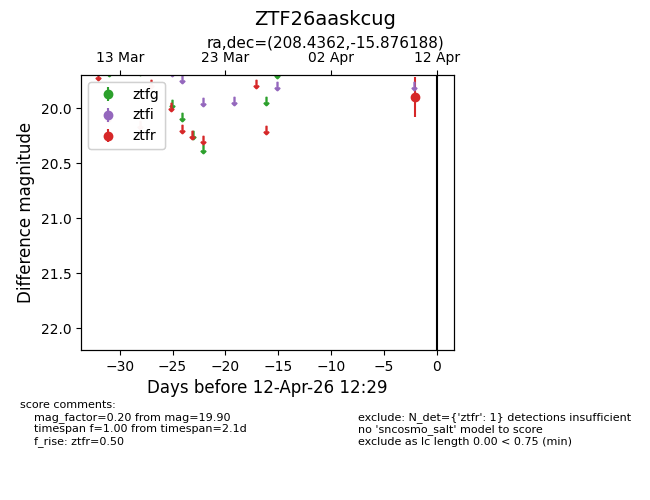
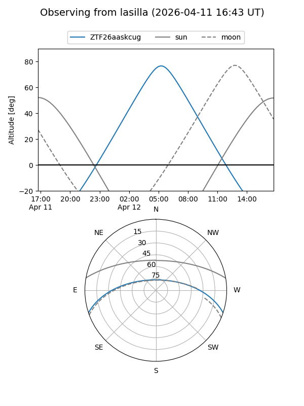
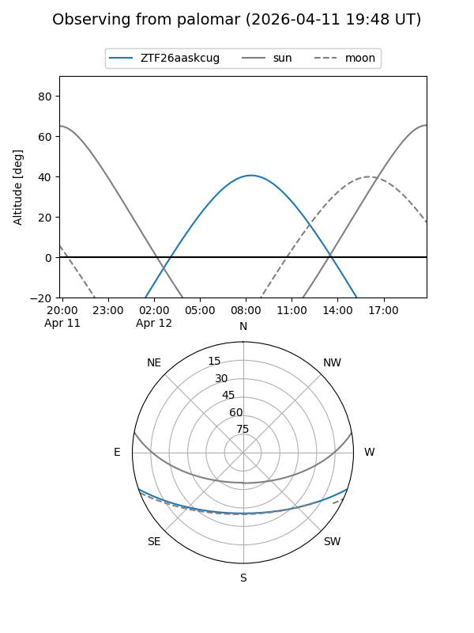

ZTF26aaskcug
Target ZTF26aaskcug at 2026-04-12 12:39
Aliases and brokers:
FINK: link
Lasair: link
ALeRCE: link
alt names
ZTF26aaskcug (ztf,fink_ztf)
Coordinates:
equatorial (ra, dec) = 208.4362,-15.87619
equatorial (HMS+DMS) = 13:53:44.69,-15:52:34.28
galactic (l, b) = (324.1306,+44.41577)
Flags:
Photometry:
last ztfr=19.90
1 ztfr detections
Lightcurve

Visibility


Additional plots